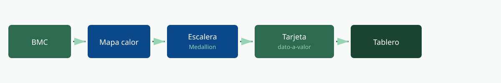
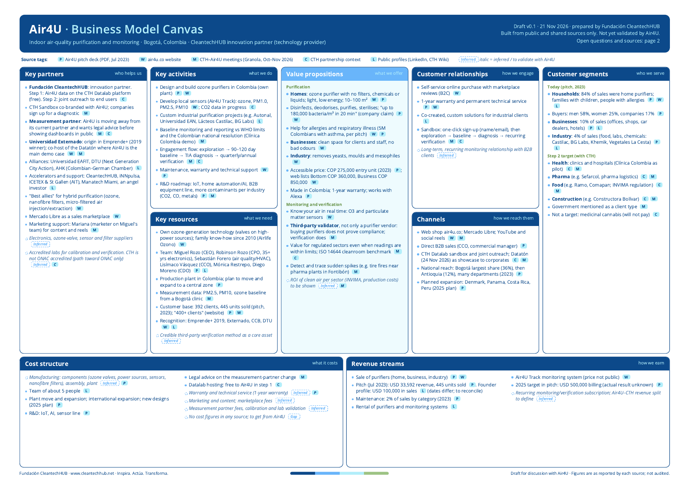
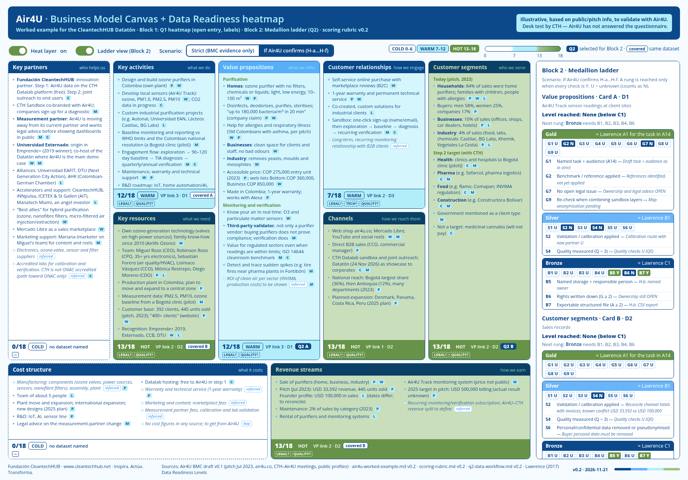
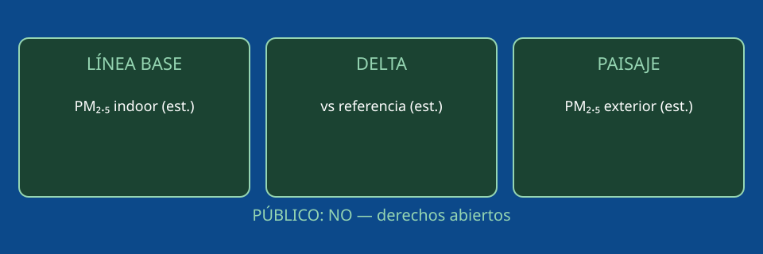

CleantechHUB · Datalab
El piloto del 24 de noviembre guía equipos del Datatón con el método del Datalab
Qué hacemos hoy, cómo se decide y qué sigue después del piloto del 24 de noviembre de 2026


Principio del método
Sin datos listos para una decisión real, no hay escalera honesta ni pantalla útil para el usuario que usted nombra.
methodology-v0.3.md (principio del método)
Ejemplo · piloto Air4U
El CTH Datalab concentra al método, los mentores y la salida hacia 2027
Equipos del Datatón
Prueban el método BMC → calor → escalera → tarjeta → tablero.
Mentores
Cortan a 6 finalistas antes de las 16:00 con reglas de honestidad.
Ruta 2027
3 ganadores entran a la vía Datalab en 2027 (beneficio piloto; detalle con mesa CTH).
CTH Datalab
Sandbox de aire abierto
Tres paneles — línea base, delta, paisaje — en cada número.
Ejemplo · piloto Air4U
El embudo del piloto deja claro quién avanza de 20 equipos a 3 ganadores
Hasta 20 equipos en el piloto del 24 nov 2026.
Mentores nombran 6 finalistas con avance del día y bono Plata.
16:00 — los 6 equipos presentan; jueces puntúan utilidad e honestidad.
3 ganadores hacia la vía CTH Datalab 2027.
Ejemplo · piloto Air4U
Confirme las horas del día con el facilitador, excepto la final a las 16:00
Bloque 1 mañana
BMC, Hoja 1 mapa de calor, calificación CTH, compartir etiquetas.
Almuerzo
Bloque 2 tarde
Hoja 2 escalera Medallion, Hoja 3 tarjeta y boceto de tablero, mentores.
Anuncio de 6 finalistas
Finales
Seis equipos — pitch con boceto; jueces con hoja finals-judging-sheet v0.3.
Cierre
3 ganadores y siguientes pasos hacia Datalab 2027.
Siguiente bloque
Pasamos del calendario confirmado al ejemplo Air4U que el paquete de equipo documenta para copiar hoy.
Guía equipos · transición mañana / tarde
Ejemplo · piloto Air4U
El método recorre nueve bloques del lienzo hasta una pantalla de una hoja
Recorren nueve bloques del BMC, pintan dónde vive cada dato, suben la escalera Medallion, nombran un usuario y una decisión, y cierran con un boceto de tres paneles.
Fuente: methodology-v0.3.md (diagrama de flujo).
Ejemplo · piloto Air4U
El ejemplo Air4U muestra el lienzo BMC de una clínica en Bogotá en piloto

El BMC de Air4U (ilustrativo, sin diligenciar por la empresa) muestra sensores indoor, ventas citadas en pitch y reseñas en marketplace. Nombre Air4U permitido; la clínica piloto queda anónima.
Fuente: bmc/Air4U_BMC.html v0.1, 21 nov 2026; air4u-worked-example.md.
Ejemplo · piloto Air4U
El mapa de calor ubica los sensores D1 en propuestas de valor bajo escenario estricto

Puntaje D1
D=10, banda WARM; enlaza VP, KA y KR. Etiquetas LEGAL?, TECH?, QUALITY? — avisan, no excluyen.
Qué copiar hoy
Fundador y operador marcan conjuntos por bloque; CTH devuelve bloques para la tarde. Debajo de Bronce sigue siendo válido.
Ejemplo · piloto Air4U
La escalera Medallion deja el ejemplo debajo de Bronce sin penalizar al equipo
Tarjeta A (sensores D1)
Nivel alcanzado: Ninguno (debajo de C1/Bronce). Siguiente grada: B5 almacenamiento nombrado, B6 derechos escritos, B7 exportación.
Lección
La grada se calcula con casillas B/S/G, no se declara. Sin ONAC acreditado — CTH en camino hacia ONAC, sin afirmar acreditación.
Ejemplo · piloto Air4U
La tarjeta dato a valor nombra al gestor del sitio piloto y su decisión semanal

Usuario: gestor de instalaciones. Decisión: ¿activar ventilación o revisar filtros esta semana si el PM₂.₅ indoor podría superar la referencia? Todos los números en estimado mientras la escalera está en Ninguno.
Fuente: team-pack-es/ejemplo-air4u.md; tests/air4u/q3-worked-example.md.
Ejemplo · piloto Air4U
El boceto de tablero organiza línea base, delta y paisaje en tres paneles

Línea base (cliente), delta (innovador) y paisaje (aire abierto). Tablero público: NO mientras derechos abiertos. Honestidad — firmar solo en Plata+.
Fuente: ejemplo-air4u.md boceto; methodology-v0.3.md tabla Open Air Sandbox.
Ejemplo · piloto Air4U
Las reglas de honestidad son las que los jueces esperan en la final de las 16:00
Plata+ para firmes
Número mostrado como firme exige Silver o Gold en la Hoja 2 ligada.
Si no, estimado
Bronce o Ninguno — marque estimado; pantalla útil sin inflar grada.
Sin tablero público
Mientras acceso legal o ético siga abierto en cualquier dato usado.
Piloto 24 nov 2026
Los mentores y jueces califican con reglas de utilidad, honestidad y bono Plata
- Mentores eligen 6 finalistas con avance de escalera, completitud de Hoja 3 y bono Plata (+1 por número firme en Plata u Oro en la tarjeta, máx. +3).
- Finales 16:00 — Parte A utilidad 0–5; Parte B honestidad 0–5 (total /10).
- Empate en utilidad y honestidad — gana la historia solo si ambas partes empataron.
- Un tablero simple y honesto gana a uno llamativo sin respaldo en la hoja.
Ejemplo · piloto Air4U
Cada equipo recibe hoy el paquete v0.3-es y apoyo del facilitador
piloto · Incluido
- Paquete equipo v0.3-es (hojas 1–3, agenda, nota de derechos, fuentes abiertas).
- Plantilla de carpeta Drive cuando el facilitador la active.
- Prompts de IA del team pack para acelerar redacción, no para inventar cifras.
Sin costo de entrada en el piloto; beneficio Datalab 2027 para 3 ganadores según mesa CTH.
Ejemplo · piloto Air4U
Las reglas prácticas de derechos de datos protegen sitios y personas sin ser asesoría legal
Solo datos permitidos
No personales o anonimizados en archivos compartidos; roles, no nombres.
Sitios identificables
Lecturas en clínica o planta son confidenciales hasta aprobación del cliente.
Si hay duda
Marque LEGAL? en el mapa y pida mentor; pare en asesoría legal formal.
Ejemplo · piloto Air4U
La mesa del Datatón atiende dudas operativas por el canal genérico de CleantechHUB
Fundación CleantechHUB
Mesa Datatón / Datalab
info@cleantechhub.net